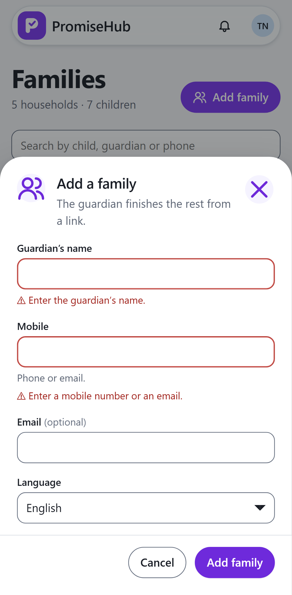
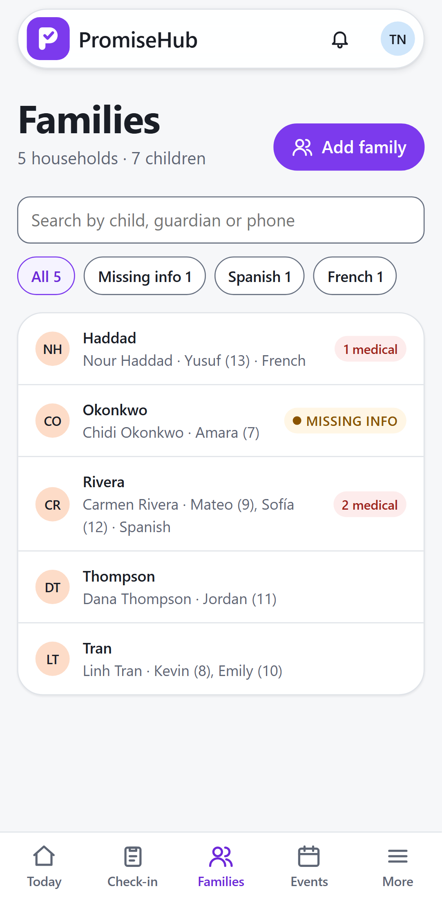

PromiseHub · Video 04
Maintain households
Families, guardians, children and medical details
Families, guardians, children and medical details
The medical card names who changed it last.


No flags, no medical fields: the server never sends them.
| Case | Answer |
|---|---|
| Medical edit | Updated audit with before and after |
| Another organization's household | 404 |
| Site lead adds a family | 403 |
| Roster off | 404 and Families redirects to Today |
Next: create programs and events